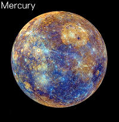

Mercury
Click on Mercuy in the model to learn more!

Closest to the Sun
The planet Mercury is the closest of the planets to the Sun. Due to Mercury’s proximity to the Sun, and it’s location relative to Earth, it is visible to observers on Earth in the late evening or early morning sky. Because of this, Mercury has become a part of the mythology and legend of almost every culture throughout the history of the Earth.
In addition, due to its proximity to the Sun, Mercury's evolution took a slightly different course than that of the other planets in our Solar System. As the Sun formed, its energy pushed much of the lighter gas and dust out of the inner Solar System, leaving behind only heavier elements. As a result, Mercury is made out of a large percentage of heavier elements, mainly iron. Mercury is essentially a large ball of iron with a very thin silicate crust.
Atmosphere and Temperature
The planet Mercury is too small and has too little gravity to hold onto an atmosphere. Any gases released from the planet quickly escape into space. Also, Mercury is so close to the Sun that any atmosphere is quickly blown away by the Sun's solar winds. Being so close to the sun and lacking an atmosphere means Mercury undergoes incredible temperature variations. The side of Mercury facing the Sun can reach temperatures as high as 800 degrees Fahrenheit, while the opposite side can see temperatures as low as -300 degrees Fahrenheit.
Gravity
The gravitational constant on earth is 9.81 m/s. On Mercury the gravitational constant is 3.7 m/s meaning that if you were to visit Mercury, you would weigh less than half of what you do on earth.
Moons
Mercury is orbiting the Sun too fast and lacks the gravitational pull to keep a moon in orbit around it. Therefore Mercury has no moons.